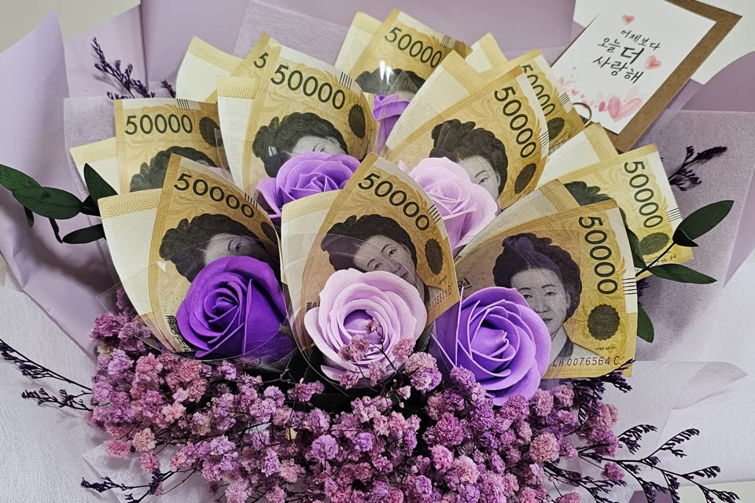
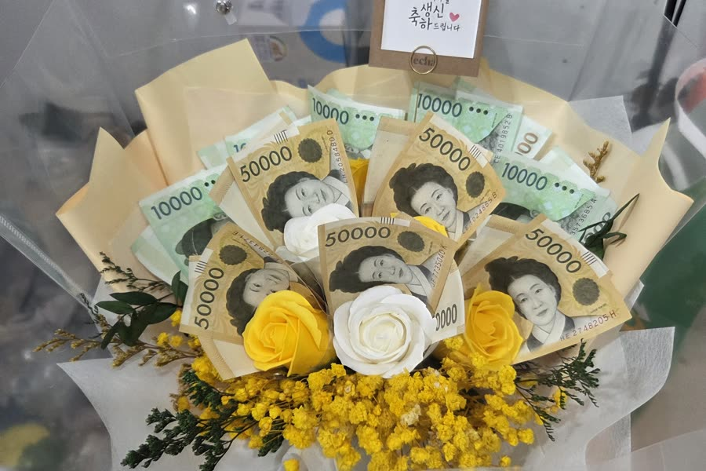
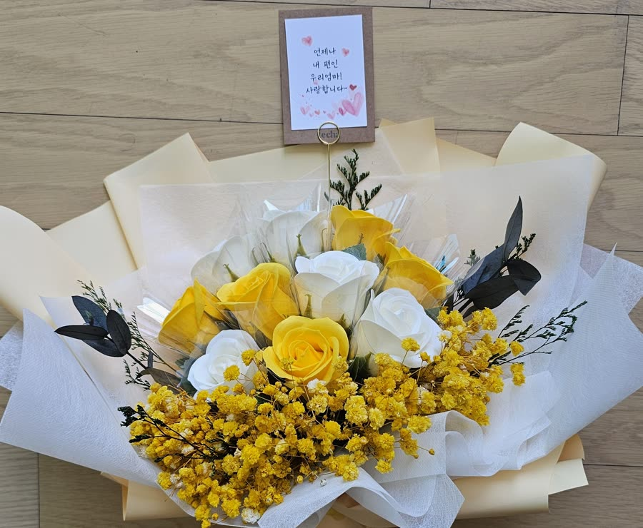

돈꽃다발을 보내드리고 나면, 저희의 일은 거기까지입니다. 선물이 잘 건네졌는지, 받으신 분이 어떤 표정을 지으셨는지는 늘 저희가 가장 궁금해하는 부분입니다.
그런데 후기에는 그 장면이 남아 있었습니다. 돈꽃다발을 받은 순간순간들이 문장으로 적혀 있었습니다. 별점보다 그 문장들이 더 오래 남았습니다.
상자를 열던 날
가장 많이 반복된 장면은 뜻밖에도 택배 상자를 여는 순간이었습니다.
- "상자를 열자마자 꽃향기가~~ 배송도 빠르고 꽃도 넘 이뻐요"
- "택배 박스 열기 전부터 향이 ~~"
- "배송이 제일 걱정이었는데 위아래 완충재 가득 넣고 꽃배송 따로 표시해주셔서 안전하게 잘 왔어요"
주문하고 나서 도착할 때까지가 가장 조마조마한 구간이라는 걸, 이 문장들을 읽으며 다시 알았습니다. 그래서 저희는 완충재를 넉넉히 넣고 꽃배송 표시를 따로 붙입니다. 그게 첫 장면을 지키는 일이라서요.
건네던 순간
두 번째로 많았던 건 전달하는 장면이었습니다.
- "선물로 드렸더니 처음엔 조화인 걸 모르시고 지폐가 있는 걸 뒤늦게 알아보시고는 좋아하셨어요"
- "할머니 선물 드렸는데 들고 다니면서 주변 분들한테 자랑하시고 너무 좋아하셨어요"
- "이벤트나 선물에 크게 감동할 나이가 아니라던 부모님께 드렸더니 소소하게 행복하다고 하시네요"
- "그냥 봉투 현금보다는 서프라이즈하게 드리고 싶어 준비해봤는데"
돈은 봉투에 담아도 전해집니다. 다만 봉투에는 사진 찍을 순간이 없습니다. 꽃에 꽂으면 건네는 시간이 조금 길어지고, 그 사이에 표정이 생깁니다. 후기의 문장들은 대체로 그 짧은 시간에 대한 기록이었습니다.

그리고 한참 뒤
가장 인상 깊었던 건 시간이 지난 뒤에 올라온 후기들이었습니다.
- "한 달이 지난 지금도 어머님 댁 거실에서 건재하고 있어요. 시들지 않는 꽃으로 하길 잘한 듯요"
- "부모님 댁에 가니 꽃병에 꽂아놓으셨더라고요"
- "돈다발은 잘 드렸고 돈은 뺀 후 꽃만 예쁘게 보관 중입니다"
- "현금은 그날 다 사라졌지만 아직도 꽃은 살아있는 게 보기 좋네요"
- "몇 달이 지나도 변형이 없고 여전히 예뻐요"
돈은 쓰이라고 드리는 것이고, 실제로 쓰입니다. 남는 건 꽃입니다.
테차 돈꽃다발은 비누꽃송이와 프리저브드 안개꽃으로 만듭니다. 물을 주지 않아도, 꽃병에 꽂지 않아도 모양이 그대로 유지되는 시들지 않는 꽃입니다. 행사는 하루로 끝나지만 거실에 걸린 꽃은 계속 그날을 가리킵니다. "비누꽃이라 오래 보관이 가능한 점이 좋습니다"라는 후기가 여러 번 나온 이유도 여기 있습니다.

아쉬웠다는 후기도 있었습니다
많지는 않았지만, 아쉬웠다는 후기도 있었습니다. 그 내용도 그대로 적어둡니다.
- 향이 강하다 — 가장 많았던 지적입니다. "며칠 놔두면 은은해져요"라는 후기도 함께 있었고, 향 없음 옵션으로 주문하실 수 있습니다.
- 상자가 눌려 왔다 — 몇 건 있었습니다. 완충 방식을 계속 보완하고 있습니다.
- 지폐 꽂기가 처음엔 어렵다 — "안에 꽃받침에 걸리지 않게 잘 끼워야 하더라고요"라는 후기가 요령을 잘 설명해줍니다. 반으로 접어 꽂는 분도, 새 지폐를 접기 싫어 일자로 꽂는 분도 계셨습니다. 둘 다 됩니다.
자주 묻는 질문
Q. 오만원권과 만원권 중 어떤 색 꽃이 어울리나요?
A. 후기에서 가장 자주 나온 조합은 오만원권에 노랑, 만원권에 보라였습니다. "5만원권에는 노랑장미가 가장 이쁜 것 같아요", "만원권 지폐에 보라색이 어울릴 것 같아 보라색으로 결정했어요" 같은 문장이 반복해서 나옵니다.
Q. 행사 며칠 전에 주문해야 하나요?
A. 비누꽃송이와 프리저브드 안개꽃으로 만든 시들지 않는 꽃이라, 미리 받아두셔도 됩니다. "조금 미리 주문했다 하니 향도 더 많이 뿌려주시고", "다시 상자 속에 봉해놨어요" 같은 후기처럼 여유 있게 준비하시는 분이 많습니다. 지폐는 당일에 꽂으셔도 늦지 않습니다.
정리하면
후기들은 결국 세 장면으로 모였습니다. 상자를 열던 날, 건네던 순간, 그리고 한참 뒤에도 거실에 남아 있는 꽃.
저희가 만드는 건 꽃다발이지만, 후기에 적히는 건 그날의 장면이었습니다. 다음 장면도 잘 만들어 보내드리겠습니다.